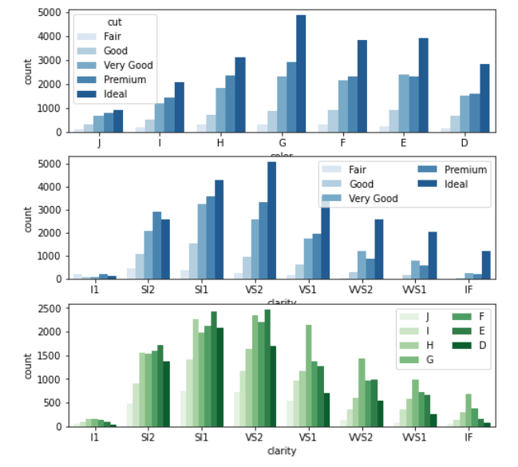

Whether it's a rare book or a diamond, something rare and unique is often expensive. In this project, I analyzed the data of various features of 54,000 round-cut diamonds such as most common sizes, colors and cuts to examine what features affect the price of diamonds most. The dataset was obtained from Kaggle and consisted of 10 features as follows
I started by looking at the distribution of the main variable of interest that is price. Price has a long-tailed distribution, with a lot of diamonds on the low-price end, and few on the high price end. When plotted on a log-scale, the price distribution looks roughly bimodal, with one peak between 500 and 1000, and a second peak a little below 5000. Interestingly, there's a steep jump in frequency right before 2000, rather than a smooth ramp up.
Next, it is very interesting to note here that in the case of carat, the small bin size proves very illuminating. There are large spikes in frequency at the bars with one digit of precision (e.g. 0.3, 0.7, 1.0) and frequency quickly trails off until the next spike. These probably represent standard diamond sizes for use in jewelry.
Next, I checked the cut, color, and clarity of the diamonds.
It is observed that most of the diamonds are of color quality G or better. The cut quality of the diamonds in the dataset is also quite good, with most of them in the Premium or Ideal level.
Clarity, shows a trend opposite from the other two features, with most of the diamonds on the lower end of the scale, at VS2 or worse. Clarity grades become rarer as steps are taken up the scale.
When investigating the x, y, and z size variables, lot of outlier points were identified. Overall, these points can be characterized by an inconsistency between the recorded value of depth, and the value that would be derived from using x, y, and z. For the data to be consistent, I decided to remove these outliers for the further analysis.
As expected, the 'x', 'y', and 'z' dimensions are all highly correlated with one another, and all of them are also highly correlated with carat. Surprisingly, the correlation coefficient between price and carat is very high, despite the fact that price has such a large range of values. This will be worth extra exploration in this section.
There doesn't seem to be that much interaction between diamond color and cut, though proportionally it seems like there might be more "Very Good" and "Premium" diamonds on the better color grades (F, E, and D). There are slightly larger interactions on the clarity grades, especially the lower levels of SI2, SI1, and VS2. It looks like there are more Very Good and Premium cut diamonds and more G, F, and E color diamonds compared to higher clarity grades.
With the preliminary look at bivariate relationships out of the way, I want to dig into some of the relationships more. First, I want to see how price and carat are related to one another for all of the data, and to plot price on a log scale.
This plot suggests from the concavity that we might want to also transform the 'carat' variable to see a linear trend. There also appears to be a price ceiling in the data: given the spread of prices for carat values less than 1.5, we'd expect the prices to be more spread out for carat sizes greater than 1.5 and to see diamonds of value higher than $20k.
Next, I tried looking at a faceted heat map across two quality dimensions – cut and caret with respect to price, but it seems like there's too many facets to look at. Perhaps a better summary can come from looking at only diamonds of a specific carat size.
A dodged point plot for diamonds of approximately 1 carat in size shows the clear influence of clarity and cut on diamond price. The larger error bars on the right side are due to there being fewer diamonds at higher clarity grades at this diamond size. There also appear to be fewer diamonds of grade 'Fair' on the higher clarity grades, with none on the highest 'IF' rating.
The hierarchy in pricing by color is clear when clustered across clarity values. The pattern looks more systematic than the "cut by clarity" pointplots.
In the exploration, I found that there was a strong relationship between the price of a diamond and its carat weight, with modifying effects from the cut, color, and clarity grades given to the diamond. I found a somewhat surprising result initially when the marginal trend for the cut, color, and clarity variables indicated that higher diamond quality was associated with lower price. However, higher diamond quality was also associated with smaller diamonds. When I isolated diamonds of a single carat weight, there was a clear positive relationship between higher diamond quality and higher diamond price. I also verified the relationship between diamond carat weight and its x, y, and z dimensions. For the dataset given, there was an interesting interaction in the categorical diamond quality features. The lower clarity grades looked like they had slightly better distribution of cut and color grades than diamonds with the higher clarity grades.